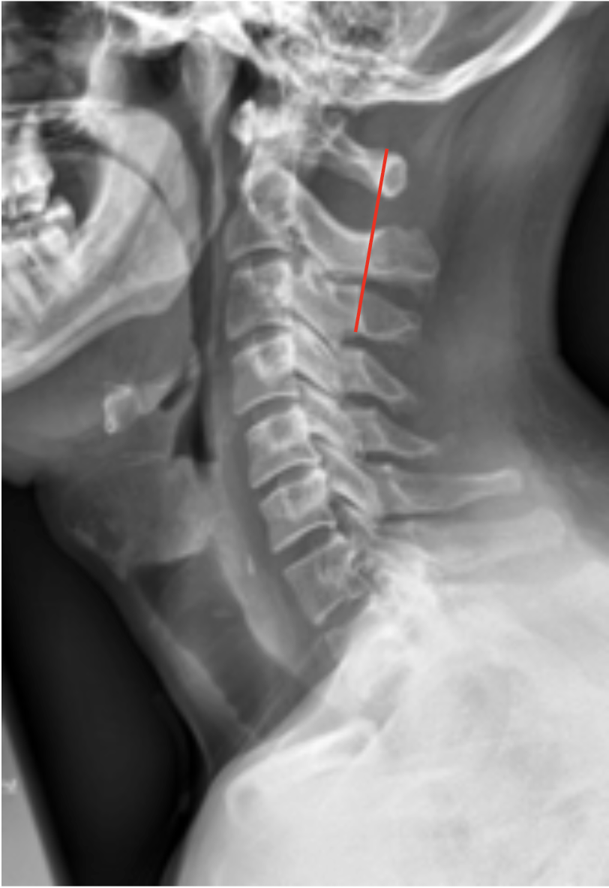
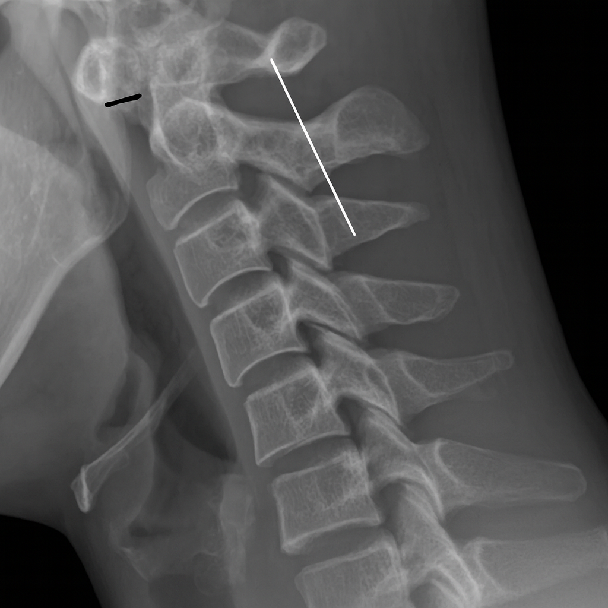

1) Description of Measurement
The Swischuk Line is a radiographic reference line used to distinguish pseudosubluxation (a normal physiologic finding in children) from true cervical spine injury, particularly at the C2–C3 level.
It is drawn along the posterior cortical margins of the spinolaminar junctions of C1 and C3, and the position of the C2 spinolaminar junction is evaluated in relation to this line.
This measurement is most relevant in pediatric cervical trauma and helps prevent misdiagnosis of physiologic anterior translation as fracture-dislocation.
2) Instructions to Measure
3) Normal vs. Pathologic Ranges
4) Important References
Swischuk LE. Anterior displacement of C2 in children: physiologic or pathologic. Radiology. 1977 Mar;122(3):759-63.
Pang D. Spinal cord injury without radiographic abnormality in children, 2 decades later. Neurosurgery. 2004 Dec;55(6):1325-42; discussion 1342-3. doi: 10.1227/01.neu.0000143030.85589.e6.
Prasher S, Landes C. The cervical spine in paediatric radiology. Br J Hosp Med (Lond). 2022 Nov 2;83(11):1-9. doi: 10.12968/hmed.2022.0076. Epub 2022 Nov 21.
Harris JH Jr, Edeiken-Monroe B. The Radiology of Emergency Medicine. 3rd ed. Baltimore: Williams & Wilkins; 1993.
5) Other info....
The Swischuk Line is particularly useful for distinguishing pediatric pseudosubluxation from true traumatic subluxation or dislocation, especially when C2–C3 anterior translation is seen.
Pseudosubluxation of C2 on C3 is normal in up to 20% of children, but the Swischuk Line helps differentiate this benign finding from true instability.
In normal physiologic pseudosubluxation, the alignment corrects when the neck is extended; true subluxation persists regardless of neck position.
This measurement should always be interpreted alongside prevertebral soft tissue thickness, posterior vertebral alignment, and neurological status.
CT or MRI is indicated if abnormal displacement is suspected to confirm ligamentous integrity or fracture.
While primarily used in pediatrics, this line can occasionally aid in evaluating upper cervical trauma in adults for gross misalignment.